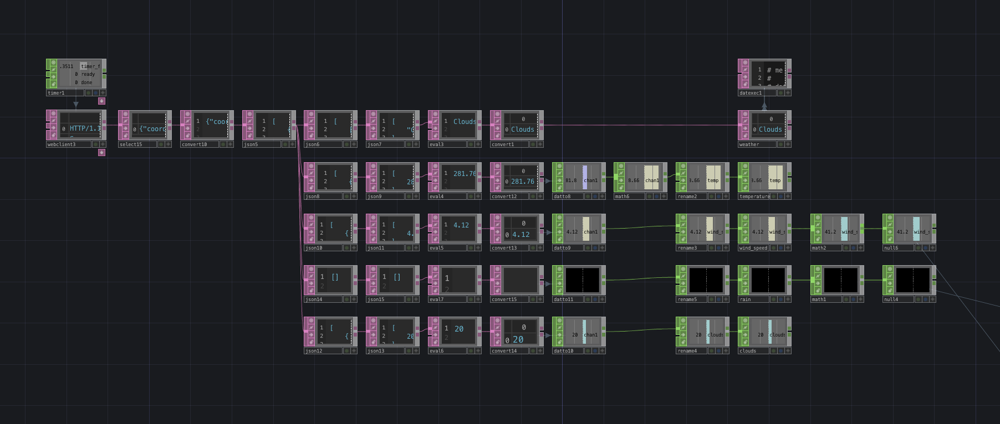
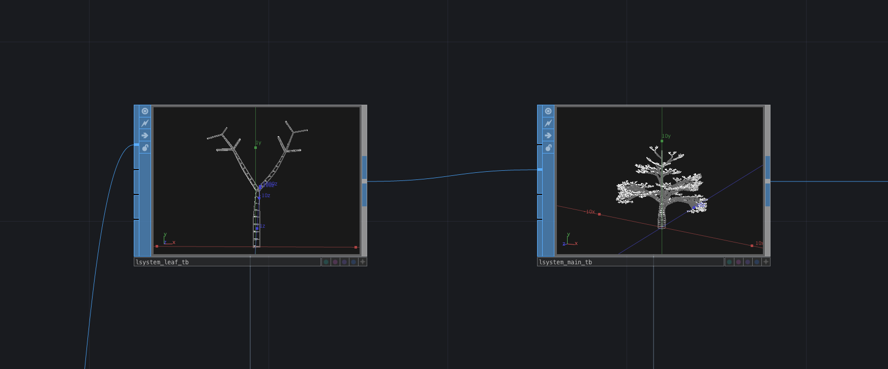
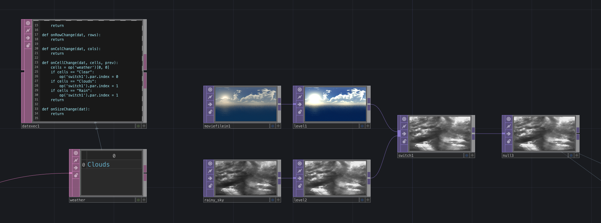
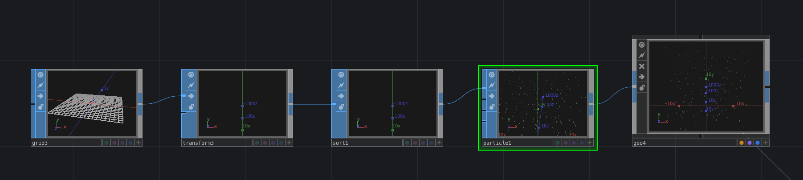
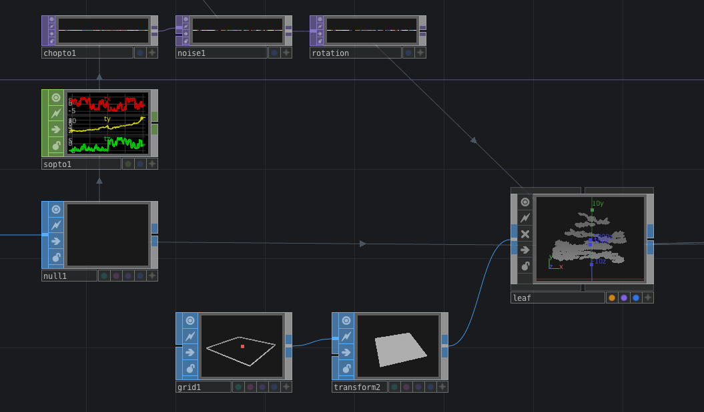

Virtual Weather Tree
現実の天候とリンクした仮想空間
個人製作
Dates
2021.04 ~ / 1 month
Tools
TouchDesigner / Open Weather Map / Python / Illustrator / Photoshop / Premiere

Overview
現実の天候とリンクした仮想空間
天気APIのOpen Weather Mapを用いて現在地の天候情報を取得。TouchDesignerで製作した仮想空間に天気APIのデータに基づいた様々な天候を加えることで、現実とリンクした空間を実現しました。virtualの”木”を見ることで実際の外の状況を一目で確認できます。
Background
現実の天候を知りたい時、テレビやアプリで調べるより実際に窓を開けて外を見た方が詳細に状況を知ることができます。水たまりが雨で揺れていたり、風で木がなびいていたり、外の状況から得られる視覚情報は天候を事細かに伝えてくれます。そこで、現在の天候とリンクした仮想空間を製作しました。外と同じ景色をデジタルで再現することで室内のどんな場所でも現在の天候を体感することができます。
System
TouchDesignerと天気APIで実装
天気APIのOpen Weather Mapで得られるデータのうち、「天気」「降水量」「風速」の3つのデータをTouchDesignerのパラメータに紐付けて操作する。
天気
天気に応じて背景画像をスイッチング
晴れ
雨
降水量
降水量でパーティクルの量をコントロール
降水量：2.5mm
降水量：10.3mm
風速
風速に応じて枝先の葉っぱの揺れ幅が変化
Programming
天気API
Open Weather Mapで現在地の天気データのURLを取得、TouchDesignerのwebclient DATを用いてjsonデータを受け取る。受け取ったデータには全ての天気情報が存在するので、整理してそれぞれを抽出している。データのリクエストはTimer CHOPで1時間に1回行っている。
Modeling
木のモデリングには、植物の成長プロセスを初めとした自然物の構造を記述するアルゴリズムであるL-systemを用いて、木のボディと枝先をそれぞれ作成して組み合わせた。
Linking
背景画像
背景画像を2種類用意。DAT Execute DATで、受け取った天気データによってSwitch TOPの値を制御する。
雨
平面のグリッドを空間の上部に配置して、上から下へパーティクルを落とす。APIから取得した雨量をParticle SOPのBirthに紐付けをしてパーティクルの生成する量を制御。
風
枝先の位置情報をNoise TOPで動かして、GeometoryのRotateにインスタンシングする。APIから取得した風速をNoiseのAmplitudeに紐付けて風で揺れる葉っぱを表現。
